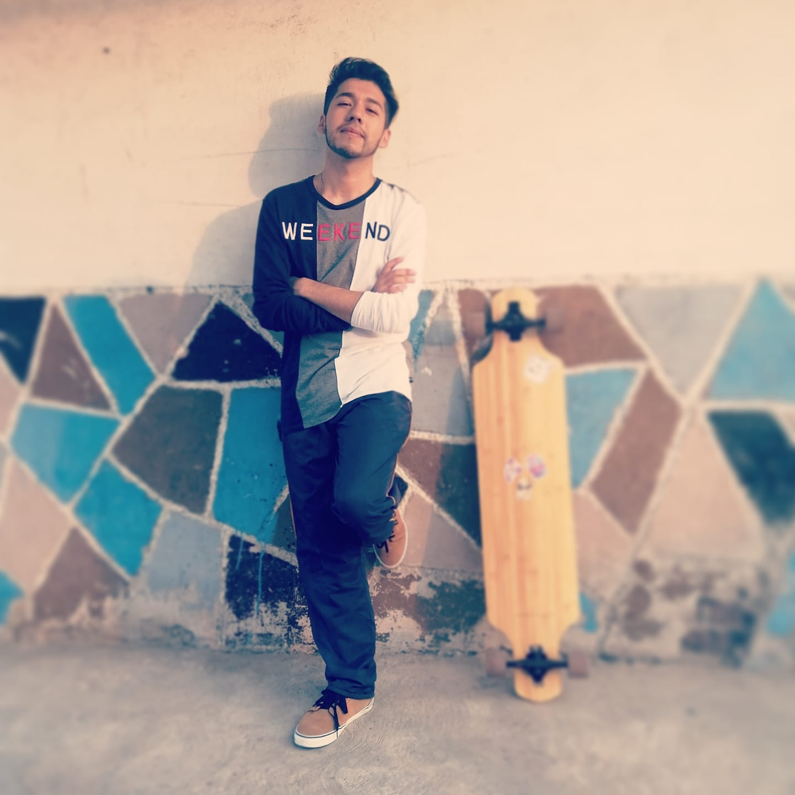

¿QUIÉN SOY?
Soy David Moreno Gutiérrez, programador Fullstack especializado en Java SE8, Spring y Javascript.
Actualmente pertenezco al proyecto PILARES donde ofrezco talleres de programación a la comunidad en la CDMX. Mis habilidades van desde desarrollo de Software en Java SE, técnicas y conocimientos en Seguridad Informatica, Criptografia y redes, asi como un habilidades de FrontEnd.
Estudié la Licenciatura en Computación en la Universidad Autónoma Metropolitana (UAM-I)
Correo: AlmaDividida@gmail.com